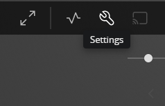

Accepting Plex Invite
To know more about plex indetailed What is Plex
1. Step one : Create Plex account
Use any one method below to create your Plex account. Once created, message me your plexid or the email address used to create the account Signup
2. Step two: Install Plex client
3. Step three: Setup your Home
- Open Plex client
- Click on
Home
- Click
More
- unpin them by clicking on the three dots
- unpin all of them "Live TV", Movies & Shows, Music,..
- Pin your libraries
- Pin Foreign, Indian, Playlist & TVShows
- Go back to your Home select
Pinned
- Your Home should look like this

Plex app is available on wide range of Platforms
4. Step Four: Set stream quality
- Select
Settings

- Select
Quality
- Select
Maximumfrom the drop menu
3. Set your 4 digit pin
once you have loggedin the 1st step is to set your pin. Its realy useful if you trying to login from an TV App
Edit pin- should be next to you name- Sorry I forgot to capture the screenshot, but the screenshot should give you an rough idea